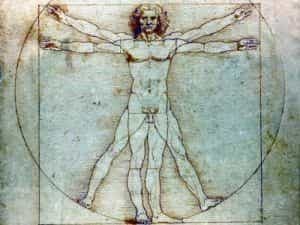
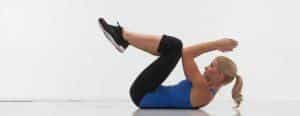
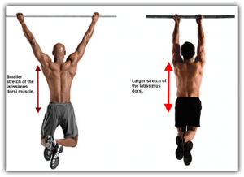
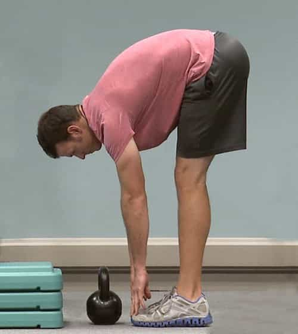
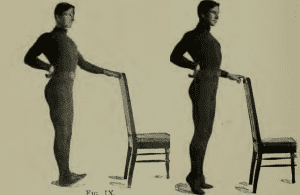
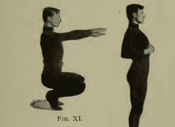

< < < Back
Could You Pass A 1902 Fitness Test? – Return Of Kings
Physical training methods have certainly changed a lot over the centuries—and most of those changes have been absolutely wrong. It’s well known to any serious physical culturist that the state of modern fitness training is dismal. Just look at the rates of obesity in the developed world, and then ask yourself if it counts as “development” to move towards a dysgenic state.
Philosophy aside, I will often say to the people I train that “worthwhile development in physical culture stopped around 1905” (the year that Thomas Inch invented the plate loading barbell), and I stand by that, with the exception of technical advice on the traditional lifts—and most of that in recent years has come from the states of the Former Soviet Union. I will admit that I have faced resistance from some over my “antiquated” views.
Speaking of the middle years of the Edwardian Era, I have recently come into the possession of a “Universal Fitness Test”, published in 1902, and written by Dudley Sargent, at the time the director of the Harvard University gymnasium. While the man can be criticized in some ways (namely, naming his son “Ledyard”), the question remains as to whether or not this 114 year old fitness exam has any merit.
The Introduction: A Brief Overview
The book doesn’t hesitate in giving you its wonderfully antiquated “Old Money WASP” verbiage: “‘To lift a heavier weight, throw further, to run faster, jump higher, to stay under water longer, to shoot further and with more accuracy than his comrades, is the burning wish of every youthful heart.’ To see this same desire in the hearts of adults, we must turn to those half-civilized peoples for whom those accoutrements are of surpassing value in the struggle for life.”
Ignoring the language that will surely clamp the anuses of SJWs shut, Mr. Sargent is right when he says that “…the practice of these exercises are of the greatest service in preparing young men for the struggles and trials of a business or professional career”—mens sana en corpore sano and all that.

As a humorous aside, he also criticizes the modern fixation on professional sports—and the adulation these professional players-of-children’s-games receive—and bear in mind that this was more than 100 years ago:
“The Great Defect of Modern Day Athletics is that they are seen as an end unto themselves…those who excel in them receive praise and prestige. Why? …Physical perfection for its own sake is worthy of struggle”
The introduction then concludes with Sargent stating that the introduction of his test, and thus a competitive element to physical education, stimulated a much greater interest in physical training amongst his students.
The Test
The test was developed to have a series of criteria: it requires little equipment, it uses all large muscle groups and the CNS-PNS and cardiovascular system, it cannot be “gimmicked” with “tricks” or be made easier or harder depending on one’s body type, and it does not require the supervision of an expert.
The exercises are as follows:
Exercise 1 is the “elbows to knees,” an old-timey way of saying “the sit-up,” with the main difference being that the legs are kept flat in this. This exercise will of course work the abdomen, as well as the hip flexors as well.

Scrunches are acceptable
Exercise 2 is the pull-up to work the back, shoulders, triceps, biceps, and forearms: Just grab onto a bar above your head and pull. The main thing that I would add is that he does not specify whether you should do palms anterior or posterior (or in layman’s terms, the pull-up or chin-up). I would say you should do both, I certainly do.

Exercise three is the classic push-up for the chest, arms, and shoulders: Keep your back straight and push up and down, touching your nose to the floor. Don’t worry about doing more advanced push-up variations like the one-handed push-up, the test doesn’t ask for it.

Exercise 4 are toe touches, a test more for flexibility of the hamstrings than strength: Place the feet together, lock the knees, and bend at the waist. This should be easy for anybody that isn’t morbidly obese.

Exercise 5: Heel and Calf Raises: Lock the legs and raise up on your tip toes, then do the same for the heels. This is a decent exercise for the ankles, feet, and calf muscles, and the heel raise trains the flexibility of the ankle in addition to the muscular work.

Exercise 6: This is an interesting exercise that some of you may not have done referred to as the “heel sit.” Hold the trunk upright, raise onto the ball of your feet, and squat down deep while extending your arms and fingers. Then rise up, bending your arms to your waist (See the picture below for clarification). Repeat.

Grading the Test
The book advises that the test should be done as follows: 10 minutes are allotted for each individual, and the testee should do as many repetitions of each exercise as can be done in that time. The book advises that a “minimal” grade would be 7 sit-ups, 4 push-ups, 4 pull-ups, 12 toe touches, 5 heel and calf raises, and 18 “heel sits.”
Improvements that can be made
If this test becomes too easy (and as it is it isn’t very difficult, I imagine it will become easy quickly), you can easily modify it to be more difficult: Instead of sit-ups, try Roman Chair situps or V-Situps. Instead of standard push-ups, do one-handed push-ups, and ditto for the pull-ups. Instead of toe touches, try touching the hands flat upon the floor (or even doing the splits if you’re capable of it). Instead of calf raises, try doing pistol squats (which will test both calf strength and ankle flexibility simultaneously). The heel sits can remain “As is.”
So for the beginner or the advanced physical culturist that needs a concrete benchmark for fitness, you could do a lot worse than this Gilded Age educational curriculum.
Read More: A Nuclear Test Women Will Throw At You And How to Pass It